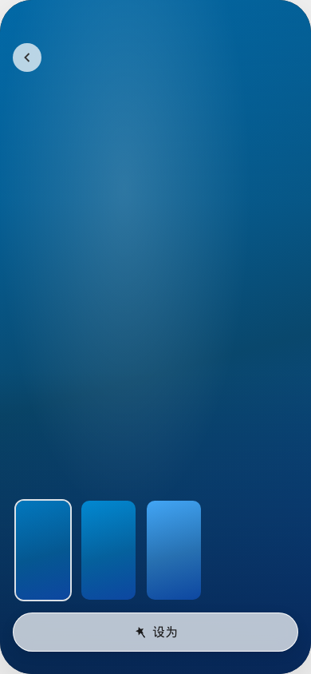

← 返回总览
3. 更换壁纸页资源应用流程
对应：进入更换壁纸页 → 选官方/在线资源替换回编辑框架 →「应用」；在线付费需校验购买状态。
① 公共：更换壁纸页选资源 → 回编辑框架
更换壁纸页
（按规则展示栏目）
选中资源

预览 / 资源详情
设为 / 替换
替换并返回编辑框架
② 官方 / 本地栏目：直接应用成功
编辑框架
点击「应用」
应用成功 → 退出编辑
③ 在线栏目付费：校验 → 购买 → 再应用
编辑框架（在线付费）
点击「应用」
弹窗：主题商店付费资源
去购买
商店详情 · 购买流程
购买成功 · 回编辑
再次「应用」
下载/应用成功